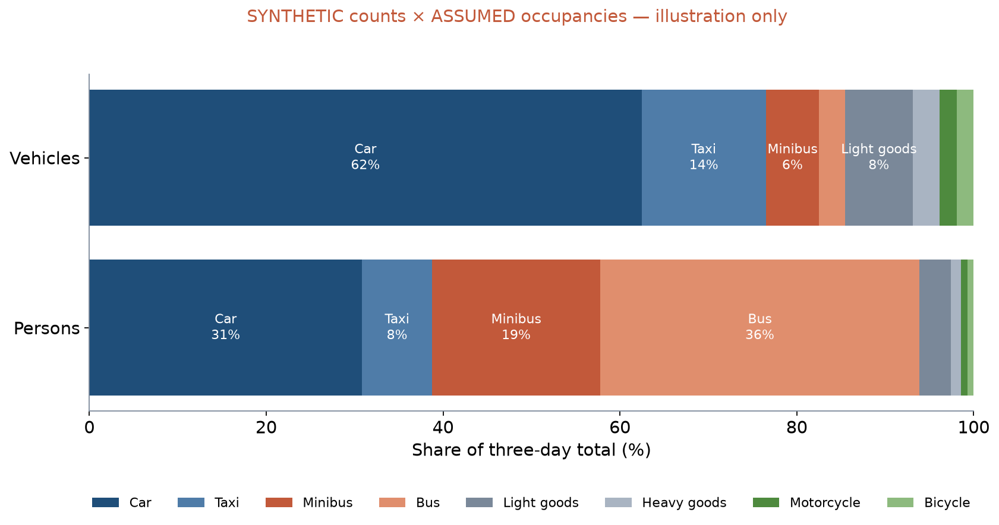

LEC4 · Urban Transport Systems Planning and Design · TSTU · Prof. J. Sodikov
1 / 23
What you will be able to do after today
Describe the existing conditions of a corridor with dated evidence
Convert vehicle flows into person flows and explain the difference
Separate observations, assumptions and forecasts in any report
Define a future baseline for one assessment year
2 / 23
This lecture is about describing a corridor before you change it. You will learn to describe existing conditions with dated evidence and to convert vehicle flows into person flows. You will also learn to separate observations, assumptions and forecasts in any report. Finally, you will define a future baseline for one assessment year.
Two baselines
Existing conditions: what is there now, measured and dated
Future baseline (do-minimum): the corridor in the assessment year without your project
Alternatives are compared with the future baseline, not with today
All alternatives use the same assessment year (syllabus §5)
3 / 23
A study needs two baselines. Existing conditions describe the corridor as it is now, measured and dated. The future baseline, also called the do-minimum, describes the corridor in the assessment year without your project. You compare each alternative with this future baseline, not with today, and every alternative uses the same assessment year.
What goes into a corridor baseline
Component
Method
Week
Traffic composition and person flows
Classified and occupancy counts
2
Journey times and speeds
Timed runs, GPS tracks
2
Public transport supply
Routes, stops, observed headways
2, 6
Street space by use
Measured cross-sections
2, 7
Walking and cycling links
Network and audit
3, 4, 8
Safety
Crash register, conflict observation
2, 8
4 / 23
This table is your checklist for the baseline data in Stage 1 of the course project. Each row is one part of the baseline: traffic and person flows, journey times, public transport supply, street space, walking and cycling links, and safety. For each part it gives the method and the week in which the course teaches it. Most parts start this week, and later weeks return to them in more depth.
Passenger car units express vehicle impact on capacity
Occupancy turns vehicles into people: count it, do not assume it
A corridor can be car-dominated in vehicles and bus-dominated in people
5 / 23
Count vehicles by class, such as car, taxi, minibus, bus, goods vehicle, motorcycle and bicycle. Passenger car units express how much each class of vehicle uses the capacity of the road. To know how many people travel, you also need occupancy, and you should count it rather than assume it. A corridor can then be car-dominated when you count vehicles and bus-dominated when you count people.
Vehicles or persons? (synthetic illustration)

SYNTHETIC LAB2 counts × ASSUMED occupancies: cars 62.4% of vehicles but 30.8% of persons; buses and minibuses 8.9% vs 55.1%.
6 / 23
This chart uses SYNTHETIC counts from LAB2 multiplied by ASSUMED occupancies, so it is an illustration, not an observation. Cars are 62.4% of the vehicles but only 30.8% of the persons. Buses and minibuses are 8.9% of the vehicles but 55.1% of the persons. In P2 you will replace the assumed occupancies with your own observations.
Worked example: person flow
Person flow = Σ (vehicles per hour × average occupancy) over classes
1,000 cars/h × 1.4 = 1,400 persons/h
30 buses/h × 35 = 1,050 persons/h
Buses are 3% of these vehicles but 43% of these people
One lane given to buses can carry more people than the car lane it replaces
7 / 23
Person flow is the sum, over all vehicle classes, of vehicles per hour times average occupancy. In this example, 1,000 cars per hour carrying 1.4 people each move 1,400 persons per hour. Thirty buses per hour carrying 35 people each move 1,050 persons per hour. So buses are only 3% of these vehicles but 43% of these people, and one bus lane can carry more people than the car lane it replaces. The numbers are illustrative, not measured; person throughput returns in Week 7.
Journey times and speeds
Measure door to door, not only on the road section
Report the spread (median and 90th percentile), not only the mean
GPS tracks double as journey-time data once cleaned
Normukhammadov: 11.5 vs 10.5 km/h mean riding speed on cycle paths vs sidewalks
8 / 23
Measure journey times from door to door, not only along the road section. Report the spread, such as the median and the 90th percentile, and not only the mean. Once cleaned, GPS tracks can also serve as journey-time data. Normukhammadov measured a mean riding speed of 11.5 km/h on cycle paths and 10.5 km/h on sidewalks.
Public transport supply
OSM maps 2,019 bus stops and 125 bus route relations in the city
No open timetable (GTFS) exists: observe headways on site
The city concept targets 95% regularity and headways shortened by up to 35%
A baseline needs measured headways to test such targets
9 / 23
OpenStreetMap maps 2,019 bus stops and 125 bus route relations (mapped bus routes) in Tashkent. There is no open timetable in the GTFS format, so you must observe headways, the time between buses, on site. The city's transport concept targets 95% service regularity and headways shortened by up to 35%. Without measured headways in your baseline, you cannot test whether such targets are met.
Street space and walking infrastructure
Measure the cross-section: carriageway, parking, footway, cycle path, trees
Compare space allocated with people moved by each mode
Footway density: 7.35 km/km² in Yakkasaroy vs 0.85 km/km² in Bektemir
OSM footways under-record; check your corridor on foot
10 / 23
Measure the cross-section of the street: carriageway, parking, footway, cycle path and trees. Then compare how much space each mode gets with how many people it moves. Ergashova (2026) found a footway density of 7.35 km/km² in Yakkasaroy but only 0.85 km/km² in Bektemir. OSM under-records footways, so walk your corridor and check what is really there.
Safety baseline
Pedestrian strikes are 57.4% of crash records in the 2016 register
Recorded death: 3.46% vs 1.08% for pedestrian vs occupant casualties
The register is a decade old and lacks locations: collect conflict observations on your corridor
State the data year next to every safety number
11 / 23
In the 2016 police register, pedestrian strikes are 57.4% of crash records. Recorded death is 3.46% for pedestrian casualties against 1.08% for vehicle occupants. These figures compare casualties that the police recorded; they do not measure risk for the whole population. The register is a decade old and has no crash locations, so collect your own conflict observations on the corridor. Always state the data year next to a safety number.
Observations, assumptions and forecasts
Label every number in your report as one of the three
12 / 23
Every number in a report is one of three kinds: an observation, an assumption or a forecast. This part of the lecture shows how to tell them apart. Labelling each number lets readers see how much of your result was measured and how much rests on choices.
Three kinds of number
Kind
Definition
Tashkent example
Observation
Measured, with method and date
66.4% of riding on sidewalks (GPS survey 2025)
Assumption
Chosen value, not measured here
Occupancy of a car; a share of residents who change mode
Forecast
Modelled future value
Corridor traffic in the assessment year
13 / 23
An observation is measured, with its method and date: for example, 66.4% of riding on sidewalks in the 2025 GPS survey. An assumption is a value you choose rather than measure, such as the occupancy of a car. A forecast is a modelled future value, such as corridor traffic in the assessment year. Mixing them up hides how much of a result was really measured, so label each number in your report.
Reading a claim: $19,007,010 per year
Pulatova estimates the yearly saving if 173,580 people walk 1,200 m instead of driving
Inputs: 10% of residents of seven districts (assumption), $0.30 per car-km (borrowed), every day of the year
Not observed: trips per day, trip length in the formula, car occupancy, who would really switch
Week 3 practical: check the arithmetic and the logic
14 / 23
This slide reads one claim closely: Pulatova's estimated saving of $19,007,010 per year. It assumes that 173,580 people, a tenth of the residents of seven districts, walk 1,200 m instead of driving. The cost of $0.30 per car-km is borrowed from another source, and the saving is counted for every day of the year. Trips per day, the trip length in the formula, car occupancy and who would really switch were not observed. In the Week 3 practical you will check the arithmetic and the logic yourself.
Building the future baseline
Start from measured existing conditions
Add committed projects only (funded, approved), not wishes
Apply stated trends: population, car ownership (private vehicles ≈7.5% a year nationally)
Keep one assessment year for every alternative
Record each trend's source and date
15 / 23
Build the future baseline from measured existing conditions. Add only committed projects, meaning those already funded and approved, not projects someone wishes for. Then apply stated trends such as population and car ownership; private vehicles in Uzbekistan have grown by about 7.5% a year. Keep one assessment year for every alternative, and record the source and date of each trend.
Scenarios are not forecasts
A forecast claims what will happen; a scenario explores what could happen
Use two or three scenarios (low, central, high growth) to bracket uncertainty
Forecast-led planning builds for predicted traffic; objective-led planning tests options against goals
SUMP step 4: build and jointly assess scenarios with stakeholders
16 / 23
A forecast claims what will happen, while a scenario explores what could happen. Two or three scenarios, such as low, central and high growth, bracket the uncertainty. In forecast-led planning you build for the traffic that is predicted; in objective-led planning you test options against goals. The SUMP Guidelines ask planners to build and assess scenarios jointly with stakeholders.
A model to follow: measured baseline, scenario economics
Normukhammadov measured the network (observation) before modelling it
Benefits are scenarios: $0.9–6.75 M/yr for 5,000 to 30,000 daily users
Each scenario states its inputs, so readers can disagree with them
17 / 23
Normukhammadov first measured the cycle network as an observation, and only then built a model of it. His estimated benefits are scenarios: $0.9–6.75 M per year for 5,000 to 30,000 daily users. Because each scenario states its inputs, readers can see them and disagree with them. Compare this with Pulatova's yearly-saving claim earlier in this lecture, where key inputs were assumed or borrowed, not observed.
Reporting uncertainty
Give ranges where inputs are uncertain
Show what changes the conclusion and what does not
Pedestrian odds ratio OR 2.60–3.89 across handlings: the direction is robust, the size is not
Date and source every number; keep the raw data
18 / 23
Where inputs are uncertain, give a range instead of one number. Say which changes would alter your conclusion and which would not. In the crash study the pedestrian odds ratio lies between 2.60 and 3.89, depending on how the data are handled. Pedestrians clearly have higher odds of a recorded death, but the exact size is uncertain. Date and source every number, and keep the raw data so others can check your work.
Discussion
Which number in your corridor baseline will be an assumption you cannot measure — and how will you show its effect?
One number, one range, one sentence.
19 / 23
This question asks you to find one number in your corridor baseline that you will have to assume because you cannot measure it. Give a reasonable range for it and write one sentence on how your result changes across that range. This makes the assumption visible instead of hiding it.
Key takeaways
Baseline = measured existing conditions + a dated future do-minimum
Count people as well as vehicles
Label every number: observation, assumption or forecast
Use scenarios to show uncertainty, not to hide it
20 / 23
A baseline has two parts: measured existing conditions and a dated future do-minimum. Count people as well as vehicles, because the two can tell different stories. Label every number as an observation, an assumption or a forecast. Use scenarios to show uncertainty openly, not to hide it.
Before P2
Pick a counting position on your corridor that is safe to stand at
Bring the P1 indicator table: the survey must serve it
Read Knoop (2021) on traffic variables
21 / 23
Before P2, choose a counting position on your corridor where you can stand safely. Bring your P1 indicator table, because the survey must serve those indicators. Read Knoop (2021) on traffic variables. Your baseline data plan will be needed for Stage 1 of the project in Week 3.
References
Rupprecht Consult (Ed.) (2019). Guidelines for Developing and Implementing a Sustainable Urban Mobility Plan (2nd ed.). European Commission / Eltis. https://www.eltis.org/mobility-plans/sump-guidelines
Salvucci, F. (2016). 1.252J/11.540J Urban Transportation Planning, Fall 2016. MIT OpenCourseWare. https://ocw.mit.edu/courses/1-252j-urban-transportation-planning-fall-2016/
Wilson, N., Sánchez-Martínez, G., & Nassir, N. (2017). 1.258J/11.541J Public Transportation Systems, Spring 2017. MIT OpenCourseWare. https://ocw.mit.edu/courses/1-258j-public-transportation-systems-spring-2017/
Knoop, V. L. (2021). Traffic Flow Theory: An Introduction with Exercises (3rd ed.). TU Delft OPEN Publishing. https://books.open.tudelft.nl/home/catalog/book/203
Synthetic teaching dataset generated for this course (method and random seed in each workbook's README sheet).
Normukhammadov, A. (2026). Pedalling Towards Sustainability: Developing an Integrated Bicycle Network for Enhanced Urban Mobility in Tashkent City (PhD thesis draft; supervisor J. I. Sodikov). Tashkent State Transport University.
TSTU course team (2026). Open data for Tashkent: inventory for the Excel/QGIS labs. Course research note, 22 October 2026 (Materials/_research/open_data_tashkent.md).
Pulatova, Z. S. (2024). Walkability assessment of Tashkent city districts (PhD dissertation, in Uzbek; supervisor J. I. Sodikov). Tashkent State Transport University.
Ergashova, M. Z. (2026). 15-minute walkability of Tashkent mahallas — dissertation defence presentation, 14 Oct 2026 (in Uzbek). Tashkent State Transport University.
Global Designing Cities Initiative & NACTO (2016). Global Street Design Guide. Island Press. https://globaldesigningcities.org/publication/global-street-design-guide/
Sodikov, J. I., et al. (under review). Odds of recorded death among police-recorded road-traffic casualties and register data quality in Tashkent, Uzbekistan. Traffic Injury Prevention (revision r4).